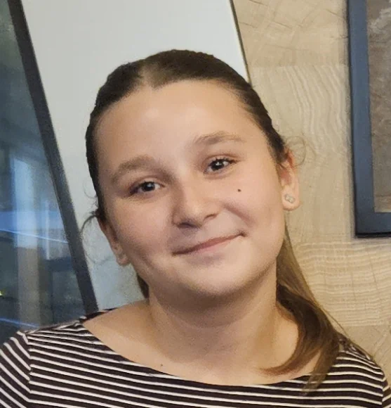

O ANIVERSARE. UN UNIVERS ÎNTREG.

Antonia14 ani de magie
O stea pentru fiecare prieten.
O amintire care rămâne.
01 · Numele tău02 · Cinci gânduri03 · Steaua ta

O stea pentru fiecare prieten.
O amintire care rămâne.